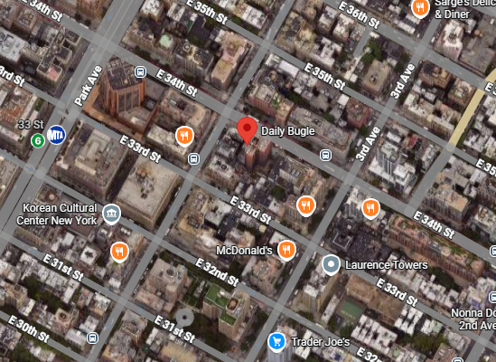

Sobre la empresa
The Daily Bugle es un medio de comunicación multiplataforma que se especializa en noticias de última hora, política y eventos urbanos en la ciudad de Nueva York, con un enfoque particular en los sucesos de vigilantes y héroes locales.
Detalles del Puesto
Cargo: Fotógrafo y Videógrafo Freelance
Fecha de ingreso: Noviembre 2024
Fecha de fin: Actualidad
Tareas realizadas:
- Captura de material fotográfico exclusivo de eventos de alto riesgo en la vía pública.
- Edición de video rápida para su publicación inmediata en redes sociales.
- Cobertura periodística de sucesos imprevistos en diferentes distritos de la ciudad.
Ubicacion

Imagen de la ubicacion del Daily Bugle